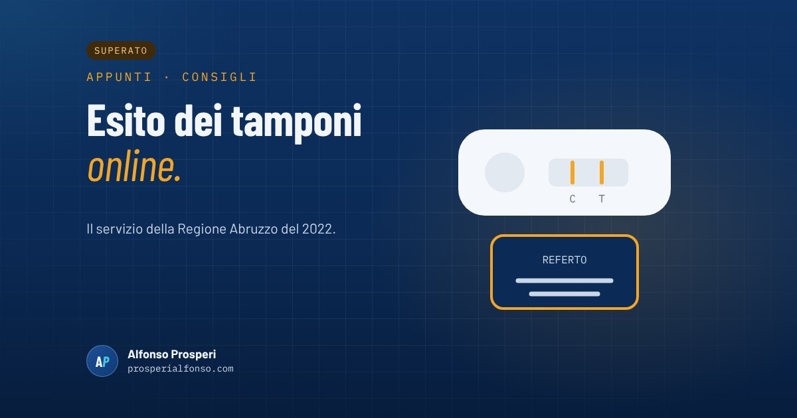

Dal 12 gennaio 2022 era possibile visualizzare online l'esito dei tamponi molecolari e dei test antigenici eseguiti nelle strutture della Regione Abruzzo (ASL, laboratori privati, farmacie).
Per fronteggiare l'emergenza, l'Assessorato regionale alla salute aveva attivato un nuovo servizio per conoscere da remoto gli esiti dei tamponi effettuati.
Attraverso la piattaforma regionale "MIA" (un portale di raccolta dei dati e delle informazioni personali) gli utenti potevano vedere i referti dei tamponi molecolari e dei test antigenici eseguiti nelle strutture del territorio abruzzese. La piattaforma era pensata come punto di accesso unico, da ampliare nel tempo con altri servizi.
Nel rispetto delle norme sulla privacy, il portale permetteva di conoscere direttamente l'esito del test, senza aspettare la comunicazione dell'operatore della ASL o del proprio medico. Era possibile vedere anche lo storico dei test registrati dal sistema di tracciamento, a partire da aprile 2020.
Bastava collegarsi da smartphone o da computer al portale regionale e, dall'area "MIA Salute", consultare il referto. Per accedere servivano SPID, CIE oppure il sistema europeo eIDAS.
Oggi referti e documenti sanitari si consultano soprattutto nel Fascicolo Sanitario Elettronico e nei servizi online della Regione, di cui parlo anche nell'articolo sul CUP Abruzzo online.